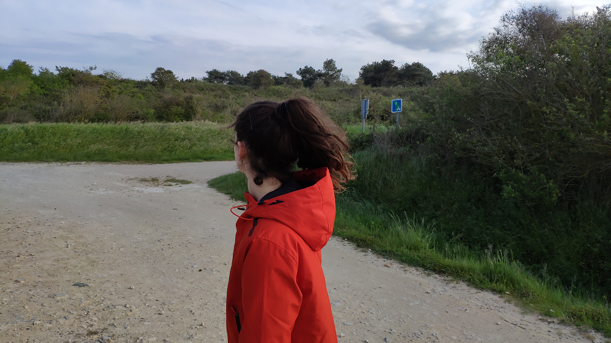

<ion-header>
  <!-- <ion-toolbar>

    <ion-buttons slot="start">
      <ion-button>
        Retour
      </ion-button>
    </ion-buttons>

    <ion-buttons slot="end">
      <ion-button>
        <ion-icon slot="icon-only" name="create"></ion-icon>
      </ion-button>
    </ion-buttons>

  </ion-toolbar> -->
  
  <ion-toolbar>
      <ion-title size="large">Messages</ion-title>
  </ion-toolbar>

  <ion-toolbar>
    <ion-searchbar></ion-searchbar>
  </ion-toolbar>
</ion-header>

<ion-content>
  <!-- <ion-button (click)="add()">Ajouter</ion-button> -->
  <ion-list>
    <ion-item detail [routerLink]="['/conversation']" id={{message.dest}} *ngFor="let message of messages | async"  fragment={{message.userDestId}}>
        <ion-avatar slot="start" >
          
        </ion-avatar>
        <ion-label>
          <div class="flex_box" *ngFor="let user of users | async">
              <ion-label *ngIf="user.id!=userId && (user.id==message.destinataire || user.id==message.utilisateur)">{{ user.nom}} {{ user.prenom}}</ion-label>
              <!--<ion-label *ngIf="message.user==user.id">{{ message.dest}}</ion-label>-->
              <!--<ion-label *ngIf="message.dest==user.id">{{ message.dest}} et {{user.nom}}</ion-label>-->
              <!--<ion-datetime slot="end" value={{message.date}} disabled display-format="H:mm"></ion-datetime>-->
          </div>
          <p><ion-icon class="text-icon" color="primary" name="checkmark"></ion-icon> {{ message.message }}</p>
        </ion-label>
    </ion-item>
  </ion-list>


  <!-- <ion-button (click)="add()">Ajouter</ion-button> -->
  

</ion-content>
